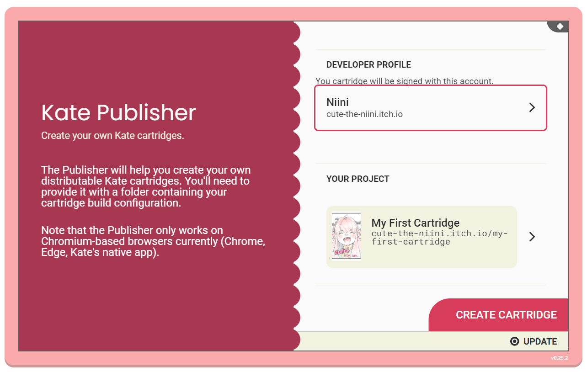

Hello, World#
Creating a start page#
Note
To make games for Kate, it’s recommended that you first take some time to learn the basics of web development. This section will assume you know what web pages are, and how to make one using the basic features of HTML, CSS, and JavaScript.
While you can publish Kate cartridges without knowledge of web development, it’ll greatly aid debugging any issues that may arise.
Let’s start by trying to get something to show up on the screen, to make sure everything is set up correctly and your Kate emulator can play games.
To begin with we’ll create a HTML page. Kate cartridges distributed with the web runtime all start with one HTML page.
Create a file called index.html in your text editor with the following
contents:
1<!DOCTYPE html>
2<html>
3 <head>
4 <style>
5 body {
6 margin: 0;
7 padding: 0;
8 width: 100vw;
9 height: 100vh;
10 display: flex;
11 align-items: center;
12 justify-content: center;
13 background: white;
14 color: black;
15 }
16 </style>
17 </head>
18 <body>
19 <h1>Hello, from Kate!</h1>
20 </body>
21</html>
Here we have a page with the text “Hello, from Kate!”, and some CSS
to put it in the centre of the screen. If you open index.html on a
web-browser you should see something similar to the image below:
Cartridge metadata#
Not very exciting, but hey, baby steps!
Now, we want to turn this into a Kate cartridge, which we can then install in a Kate emulator to play. To do so we’ll need to create a file describing the cartridge, that’s then used by the Publisher tool to build the actual cartridge.
Create a file called kate.json in the same
folder as your index.html, and give it the following contents:
1{
2 "id": "my.domain/my-first-cartridge",
3 "version": { "major": 1, "minor": 0 },
4 "metadata": {
5 "presentation": {
6 "author": "Your Name",
7 "title": "My First Cartridge",
8 "tagline": "My first cartridge",
9 "thumbnail_path": "thumbnail.png"
10 }
11 },
12 "files": ["index.html", "thumbnail.png"],
13 "platform": {
14 "type": "web-archive",
15 "html": "index.html"
16 }
17}
This file tells the Publisher tool that there’s a game identified by
my.domain/my-first-cartridge. The my.domain part should match
what your developer profile uses, otherwise you won’t be able to sign
the cartridge. The my-first-cartridge part can be anything (using
only letters and hyphens), but it must be unique among your games.
A version is also required, and every time you publish a new cartridge release, you should update the version number. Here we start with version “1.0”.
We also provide a more readable title, My First Cartridge. This is
what players will see in the cartridge selection screen. And we tell
Kate which file will serve as the thumbnail image for the cartridge—the
thumbnail is optional, but highly recommended, and should be 400x700 pixels.
For this you can use the thumbnail.png image below:
{kind=link}

Next we tell Kate what files are actually in the cartridge. Our cartridge
so far is made up of a two file, index.html and our thumbnail.png.
All files we declare in this files section will have their contents
included directly in the cartridge file (using a special file system).
Finally, in order to play this cartridge, we tell Kate to use the
web-archive platform. This means that
Kate will treat it as if it was a web page of sorts. This web-archive
platform requires us to specify which web page Kate should load first;
we only have one, so index.html is is.
Packaging your game#
Having your files in place, it’s time to open the Publisher application and select both your developer profile and the project folder. You should see something like the following:
Note
If you get a warning saying “Developer domain doesn’t match the work’s domain”,
it means your kate.json configuration has a cartridge id that is
different from your developer profile’s domain. You need to update it so
it matches.
When you click Create cartridge, the Publisher will generate a cartridge
for you and use your developer’s key to sign it. You might need to use your
password to unlock your signing key if you haven’t unlocked it recently.
Once the cartridge is ready to be saved, you’ll see a review screen that
includes a summary of the cartridge. Clicking the Save cartridge button
will let you save the .kart file to your device to distribute it:

Testing your game#
With a .kart file in hand, you should try out your cartridge. First
close the Publisher application (press  , then
, then Close game), then
install the new cartridge file you just saved. Your home screen should
show your cartridge, with the title and thumbnail you chose:

When you open the cartridge, you should see the same screen we look at in the beginning of this page:

Special game engine support#
Kate aims to support a majority of game engines that can export your project as a web game, and allow players to run those games in a web browser without the size and lag limitations typical of a browser-based game. The process described here is very similar to what you’d follow to get a Kate cartridge for a Ren’Py visual novel, a Godot RPG, or a Bitsy adventure, except you don’t need to write your own HTML page and CSS files.
There’s special support built in the Publisher application for many of these engines, meaning you might be able to get your game to work even with very little knowledge of web development. Check out the Kate Porting Recipes book for configuration examples and tips on how to create cartridges for games made in Ren’Py, Godot, Bitsy, and more.
Configuration files#
The Publisher uses special JSON configuration files to describe how the cartridge should be built. These configuration files contain other meta-data used to present and search for the cartridge, as well as some information on how the cartridge should be executed.
Detailed information about these configuration files is available in the Packaging cartridges section.